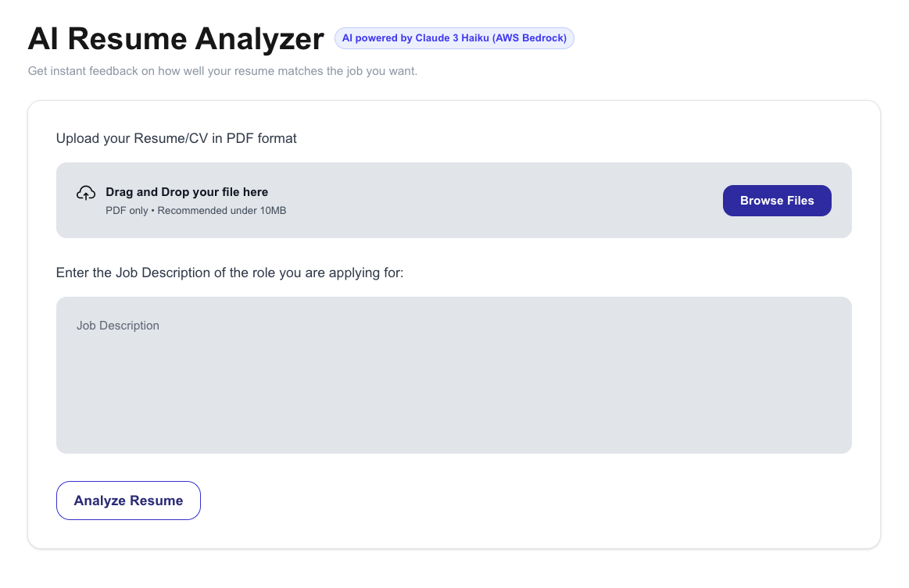
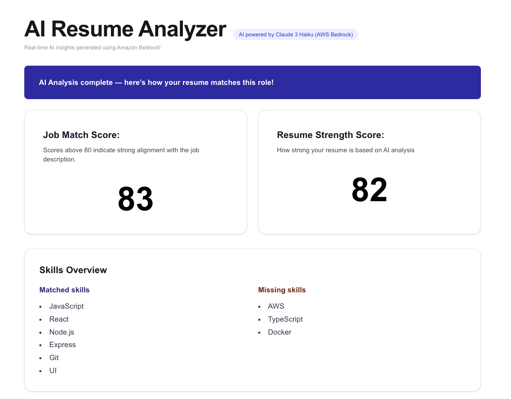
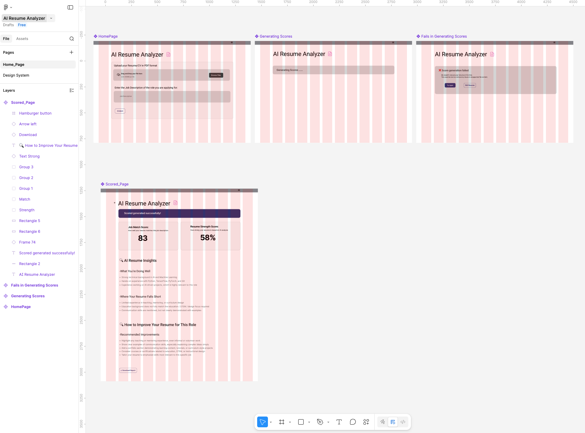
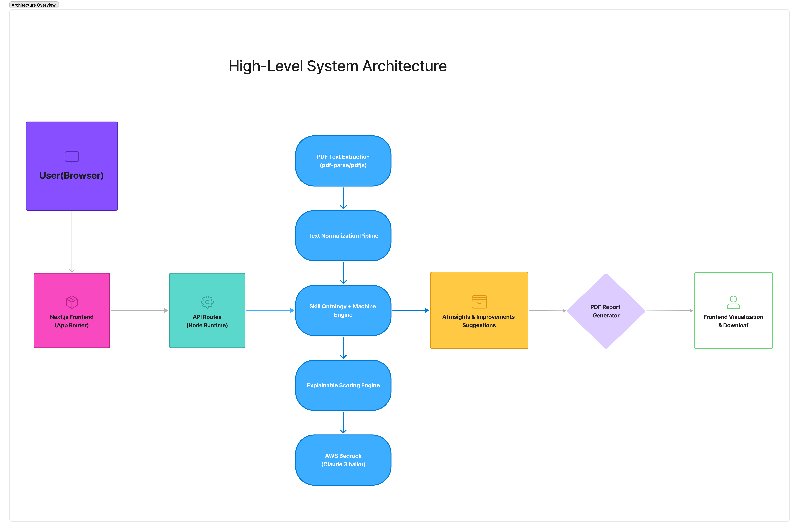

✨ AI Resume Analyzer – Business Insights
Project Overview
AI Resume Analyzer is an AI-powered web application designed to help job seekers understand how well their resumes match specific job descriptions. By combining resume parsing, skill extraction, and generative AI analysis, the platform provides transparent scoring, personalized feedback, and actionable improvement suggestions.
The goal of the platform is to reduce the uncertainty in the job application process by making resume evaluation more data-driven, explainable, and accessible for both candidates and recruiters.
Target Audience
- Job seekers who want to improve their resumes for specific job roles
- Recruiters who want transparent insights into candidate resume quality
- Entry-level developers and professionals applying to competitive tech jobs
- Career coaches helping clients optimize resumes for job applications
Tech Stack
Next.js, React.js, Tailwind CSS, AWS Bedrock (Claude 3 Haiku), Node.js API Routes, Skill Ontology Mapping, PDF Parsing (pdf-parse), Vercel Deployment
System Architecture
Frontend Layer
Next.js, React and Tailwind UI for resume upload and result visualization.
Backend Processing
Server-side API routes orchestrate resume parsing and AI requests.
AI Analysis
AWS Bedrock (Claude 3 Haiku) generates resume insights and improvement suggestions.
Deployment
Serverless deployment on Vercel with secure environment configuration.
AI Processing Pipeline
Business Problem
Many job seekers struggle with understanding why their resume does or does not match a job description. Traditional resume feedback tools often present vague suggestions or rely on black-box AI systems that lack transparency.
Common challenges include:
- Unclear resume-to-job matching criteria
- Difficulty identifying missing or weak skills
- Lack of actionable feedback for improving resumes
- Recruiters needing quick, structured insights into candidate profiles
These issues create frustration for applicants and inefficiencies in the hiring process.
How the Platform Solves These Problems
AI Resume Analysis
- Uses AWS Bedrock (Claude 3 Haiku) to analyze resume content and compare it with job descriptions, generating intelligent feedback and suggestions.
Skill Extraction & Matching
- Extracts and normalizes technical skills from resumes using a Skill Ontology system, allowing accurate comparison between resume skills and job requirements.
Explainable Scoring
- Provides transparent scoring metrics such as:
- Job Match Score
- Resume Strength Score
Actionable Resume Insights
- Generates AI-powered recommendations that help candidates improve their resumes with targeted suggestions for skills, structure, and content.
Interactive Dashboard
- Displays:
- Matched skills
- Missing skills
- Score breakdown
Helping users quickly understand where their resume stands.
Key Features
- Resume upload and automatic PDF parsing
- Skill extraction and normalization using ontology-based matching
- AI-generated resume evaluation using AWS Bedrock
- Explainable scoring system with detailed breakdown logic
- Personalized improvement suggestions powered by generative AI
Result
The AI Resume Analyzer demonstrates how generative AI can be applied to real-world hiring workflows. By transforming resume evaluation into a transparent and explainable process, the platform helps job seekers make informed improvements and better align their resumes with job requirements.
The project also showcases the practical integration of cloud-based AI services, modern web frameworks, and explainable scoring systems, highlighting how AI can support both candidates and recruiters in the hiring process.